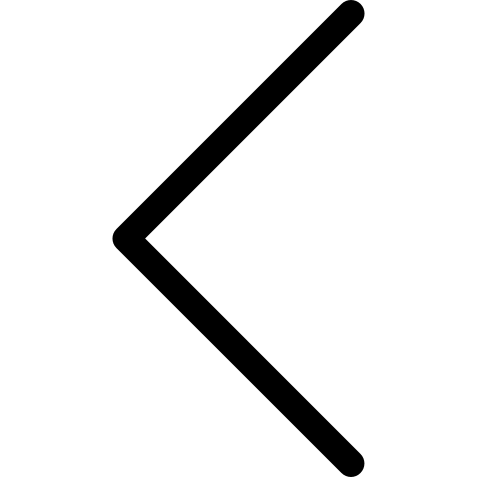
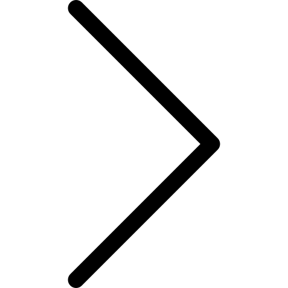
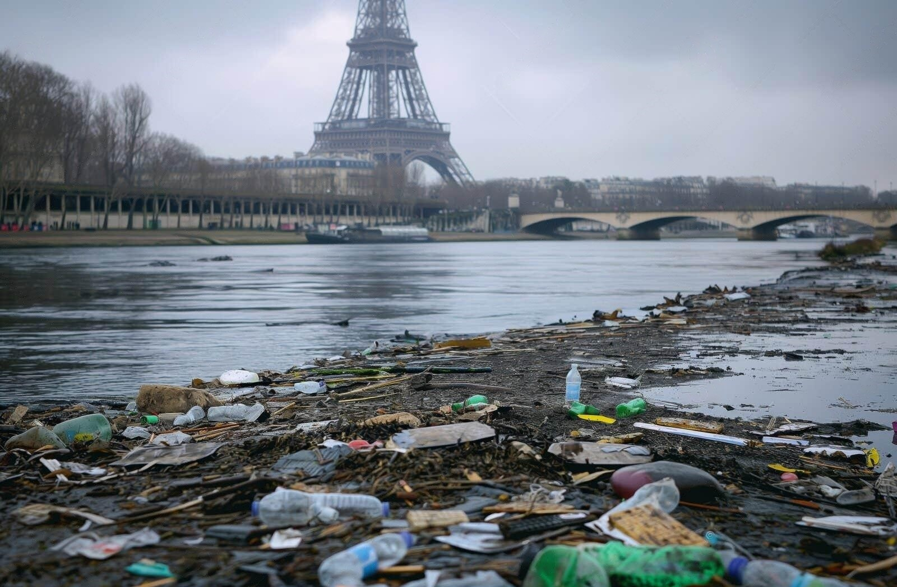

La Seine est un fleuve emblématique qui traverse Paris et relie la Bourgogne à la Manche. Ce fleuve majestueux est non seulement vital pour le transport et le commerce, mais il joue un rôle central dans la culture et l'histoire de la capitale française.
Bien que la Seine soit essentielle à la vie parisienne, elle fait face à de nombreux problèmes de pollution :
Les eaux de ruissellement chargées d'hydrocarbures et de métaux lourds rejoignent directement le fleuve.
Lors de fortes pluies, les systèmes d'égouts dépassent leur capacité et déversent des eaux usées non traitées.
Les eaux usées des installations portuaires contribuent à la contamination chimique et bactériologique.
| Type de Pollution | Effets sur la Seine | Solutions proposées |
|---|---|---|
| Écoulements routiers | Polluants dans les eaux de la Seine | Améliorer le drainage routier |
| Systèmes d'égouts | Débordements durant la pluie | Installer des bassins de rétention |
| Eaux usées des infrastructures | Pollution par des déchets industriels | Traitement des eaux usées avant rejet |
La pollution de la Seine a un impact grave sur la faune et la flore aquatique. Les poissons, les oiseaux et les plantes qui dépendent du fleuve sont directement affectés par les contaminants chimiques et les déchets plastiques.


La ville de Paris mène de nombreux efforts pour restaurer la Seine, notamment en réduisant les écoulements de pollution routière et en connectant les bateaux au réseau d'égouts.
